Hello! My name is Miranda Jodice. Welcome to my personal Portfolio. Here you can find:
Miranda Jodice Creations
Miranda Jodice Creations: Enter A World Of Her Own
A little about myself:
Collection of Work
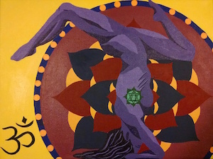
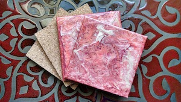
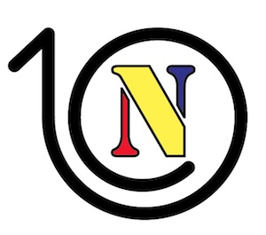
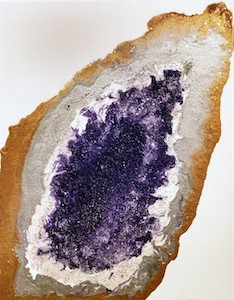
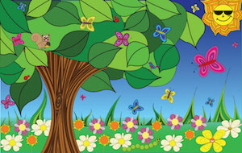
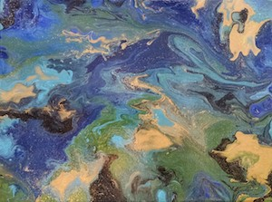
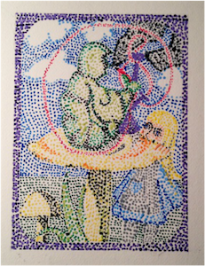
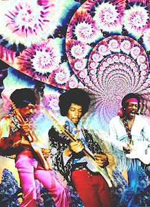
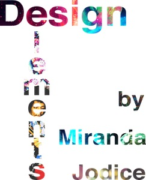
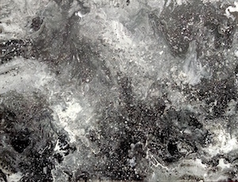
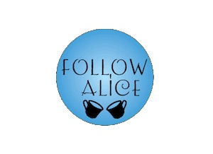


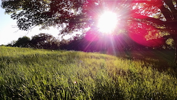
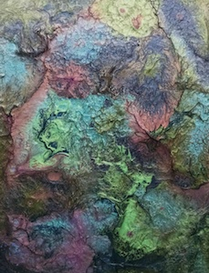
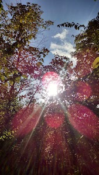
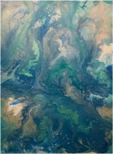
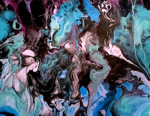

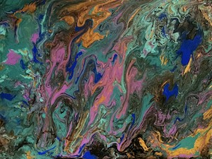
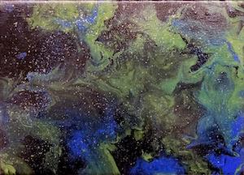
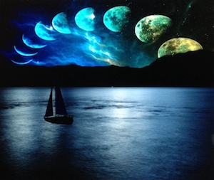

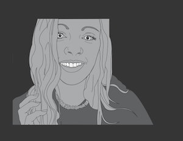